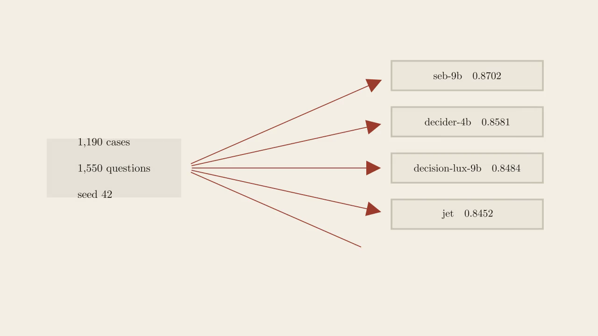

One sealed manifest
1,190 cases and 1,550 typed questions, checksum verified before every run. No model sees a different question set.
Dataset 2.1.0 · as of 2026-11-19 · independent · no affiliation
Independent benchmark · System One decision models
We run every model ourselves on the same sealed cases at one seed. No vendor-published scores, no per-model prompt tuning. See where each model stands, check the evidence behind its number, and take the raw results with you.
Explore the fieldDownload the data
Best open-weights · evaluation accuracy
0.8702
seb-9b open weights
0.0363 behind Jev 1.13.0 (0.9065)

01 / Compare the field
Start with the full field on 1,240 evaluation decisions. The nine marks beside a name show where it is strong and where it is not. Fine rank inside the top band is not a stable claim at this sample size. Technique reimplementations are our reading of a published method over a public base checkpoint, not the authors' code.
Deferrals are recorded per run in data/results.json; a deferring model is called out here when present.
Each row records the readout used. Rows carrying a readout caveat are explained in llms-full.txt, and no number is changed by the caveat.
Select up to three models in the field to compare their suite accuracies.
02 / Go beyond one score
A single number hides the shape of a model. Pick one to see all nine suites, or compare the top five in each suite before you shortlist.
Best by task
Leaders are derived from the stored accuracies. Models within 0.0050 of the top are listed together: that gap is not a stable lead at this sample size.
agnews
lumma-fev-4b, lumma-fev-9b, lumma-fev-06b
0.9563
banking77 12
lumma-fev-9b
0.9896
emotion
seb-9b
0.8281
guardrails
seb-9b
1.0000
mnli
decision-lux-9b
0.9167
moderation
decider-4b, lumma-fev-4b, mini-jev
0.9444
multilingual intent
seb-9b, decider-4b, intern-decision-4b, jevk5, tev1-08b, bosun-06b
1.0000
sst5
seb-9b
0.5583
triage
intern-decision-4b
0.9531
Nine suites · 1,240 decisions
| Model | agnews | banking77 12 | emotion | guardrails | mnli | moderation | multilingual intent | sst5 | triage |
|---|---|---|---|---|---|---|---|---|---|
| seb-9b | 0.8812 | 0.8958 | 0.8281 | 1.0000 | 0.8000 | 0.9306 | 1.0000 | 0.5583 | 0.9375 |
| decider-4b | 0.9250 | 0.9167 | 0.7917 | 0.8333 | 0.8417 | 0.9444 | 1.0000 | 0.4833 | 0.9427 |
| decision-lux-9b | 0.8438 | 0.8854 | 0.7344 | 0.9792 | 0.9167 | 0.9306 | 0.9750 | 0.5250 | 0.9010 |
| jet | 0.8938 | 0.9062 | 0.7917 | 0.8333 | 0.8250 | 0.9306 | 0.9667 | 0.4917 | 0.9271 |
| kev-4b | 0.8812 | 0.9271 | 0.8073 | 0.9167 | 0.8000 | 0.9097 | 0.9583 | 0.4500 | 0.9271 |
| jpt-9b | 0.8812 | 0.8958 | 0.7865 | 0.9792 | 0.7583 | 0.9375 | 0.8417 | 0.5167 | 0.9271 |
| intern-decision-4b | 0.8750 | 0.8958 | 0.8073 | 0.7917 | 0.7333 | 0.8889 | 1.0000 | 0.4583 | 0.9531 |
| kev-9b | 0.8750 | 0.9271 | 0.8125 | 0.8021 | 0.8417 | 0.8056 | 0.9333 | 0.5167 | 0.9115 |
| jevk5 | 0.7812 | 0.8750 | 0.8125 | 0.8333 | 0.7667 | 0.9375 | 1.0000 | 0.4750 | 0.9271 |
| neohorse-4b | 0.8938 | 0.9167 | 0.7812 | 0.9896 | 0.8500 | 0.9028 | 0.7167 | 0.4750 | 0.9167 |
| jpt-4b | 0.8875 | 0.8438 | 0.7969 | 0.9479 | 0.7417 | 0.9097 | 0.8083 | 0.5417 | 0.9219 |
| tev1-4b | 0.8438 | 0.8958 | 0.7969 | 0.9479 | 0.8250 | 0.9375 | 0.8417 | 0.4583 | 0.8698 |
| decision-nox | 0.8438 | 0.8750 | 0.7344 | 0.8438 | 0.7833 | 0.9028 | 0.9333 | 0.3750 | 0.8854 |
| decider-2b | 0.8938 | 0.9062 | 0.7083 | 0.6354 | 0.7917 | 0.8819 | 0.9167 | 0.4667 | 0.9062 |
| this-that-12 | 0.8063 | 0.8854 | 0.7031 | 0.5833 | 0.7833 | 0.9097 | 0.9417 | 0.5250 | 0.8854 |
| decision-eos | 0.8625 | 0.8229 | 0.6562 | 0.8646 | 0.7500 | 0.8611 | 0.9083 | 0.4083 | 0.8906 |
| hopper-g | 0.8250 | 0.8125 | 0.8125 | 0.7708 | 0.5917 | 0.8889 | 0.8917 | 0.3917 | 0.9062 |
| lumma-fev-4b | 0.9563 | 0.9792 | 0.6094 | 0.5833 | 0.7333 | 0.9444 | 0.8167 | 0.3333 | 0.9375 |
| lumma-fev-9b | 0.9563 | 0.9896 | 0.6198 | 0.7812 | 0.7667 | 0.9236 | 0.5250 | 0.4083 | 0.9427 |
| kev-08b | 0.8688 | 0.9271 | 0.6823 | 0.9062 | 0.5083 | 0.8750 | 0.9000 | 0.4167 | 0.8698 |
| intern-decision-2b | 0.8688 | 0.8021 | 0.7656 | 0.7708 | 0.6667 | 0.7986 | 0.9750 | 0.3333 | 0.8750 |
| nimble-v2 | 0.8063 | 0.4479 | 0.7604 | 0.9792 | 0.5500 | 0.9306 | 0.9250 | 0.4417 | 0.9323 |
| decision-sol | 0.7937 | 0.8438 | 0.6823 | 0.7292 | 0.8000 | 0.9097 | 0.8417 | 0.4000 | 0.8802 |
| jpt-08b | 0.8313 | 0.8125 | 0.7240 | 0.9271 | 0.6000 | 0.8750 | 0.7417 | 0.4250 | 0.8906 |
| tev1-08b | 0.8500 | 0.8125 | 0.6667 | 0.6146 | 0.6750 | 0.8750 | 1.0000 | 0.4917 | 0.8333 |
| mini-jev | 0.8625 | 0.7188 | 0.7292 | 0.8438 | 0.5833 | 0.9444 | 0.8000 | 0.4500 | 0.8385 |
| bosun-17b | 0.8313 | 0.9792 | 0.5521 | 0.6979 | 0.6583 | 0.8611 | 0.9917 | 0.2667 | 0.8854 |
| metask | 0.8812 | 0.8021 | 0.7812 | 0.5104 | 0.5333 | 0.8889 | 0.7917 | 0.3917 | 0.8646 |
| intern-decision-08b | 0.8562 | 0.7917 | 0.7188 | 0.3438 | 0.5167 | 0.8819 | 0.9750 | 0.3333 | 0.8750 |
| lavoir | 0.8812 | 0.8229 | 0.6979 | 0.7292 | 0.4333 | 0.7917 | 0.5667 | 0.3833 | 0.9219 |
| decision-kai | 0.7562 | 0.7188 | 0.6354 | 0.8854 | 0.6333 | 0.8194 | 0.7833 | 0.2000 | 0.8854 |
| bosun-06b | 0.7812 | 0.8958 | 0.5365 | 0.5104 | 0.6000 | 0.8125 | 1.0000 | 0.2500 | 0.8646 |
| laya | 0.9313 | 0.7604 | 0.6771 | 0.7604 | 0.6167 | 0.7569 | 0.4500 | 0.2917 | 0.8750 |
| gliner-decide | 0.7375 | 0.8750 | 0.6667 | 0.7812 | 0.3667 | 0.7431 | 0.6333 | 0.4917 | 0.8750 |
| mimir | 0.9000 | 0.8021 | 0.6250 | 0.8438 | 0.7167 | 0.7778 | 0.1167 | 0.4250 | 0.7708 |
| gliner-base | 0.7375 | 0.7812 | 0.6979 | 0.5938 | 0.6000 | 0.6181 | 0.6167 | 0.3833 | 0.6406 |
| decision-lex | 0.7188 | 0.6667 | 0.5729 | 0.3021 | 0.3917 | 0.7292 | 0.7417 | 0.2667 | 0.7760 |
| gliner-multi | 0.7250 | 0.8125 | 0.5781 | 0.6146 | 0.5667 | 0.2222 | 0.8417 | 0.3083 | 0.5573 |
| lev | 0.5563 | 0.7917 | 0.2969 | 0.9375 | 0.3333 | 0.8056 | 0.2250 | 0.5333 | 0.7292 |
| jobe | 0.8438 | 0.3958 | 0.7240 | 0.9167 | 0.3333 | 0.4861 | 0.3333 | 0.3667 | 0.4688 |
| verdict | 0.6188 | 0.7708 | 0.5104 | 0.4583 | 0.4083 | 0.6111 | 0.5083 | 0.3250 | 0.6875 |
| mojev | 0.6312 | 0.7708 | 0.3542 | 0.2917 | 0.4667 | 0.7292 | 0.4583 | 0.3083 | 0.7812 |
| gliner-small | 0.7688 | 0.7500 | 0.6094 | 0.5625 | 0.6333 | 0.2847 | 0.5333 | 0.2917 | 0.4323 |
| julia-1 | 0.5437 | 0.8438 | 0.6146 | 0.3021 | 0.3333 | 0.3819 | 0.7500 | 0.3000 | 0.6042 |
| lumma-fev-06b | 0.9563 | 0.9375 | 0.6250 | 0.6562 | 0.3250 | 0.2778 | 0.0667 | 0.2583 | 0.4896 |
| lumma-fev-01b | 0.9062 | 0.6875 | 0.5417 | 0.2708 | 0.3583 | 0.2847 | 0.0000 | 0.2000 | 0.4323 |
| harsha | 0.5563 | 0.2604 | 0.6458 | 0.7083 | 0.3333 | 0.2639 | 0.2833 | 0.3417 | 0.3802 |
| lfm2600 | 0.2500 | 0.3021 | 0.2188 | 0.5417 | 0.3417 | 0.6875 | 0.1667 | 0.3667 | 0.5156 |
| lfm350 | 0.4375 | 0.1250 | 0.5260 | 0.7083 | 0.4250 | 0.2708 | 0.1667 | 0.2083 | 0.2448 |
| pngwn | 0.3375 | 0.2604 | 0.0781 | 0.7083 | 0.3833 | 0.2708 | 0.1667 | 0.0917 | 0.2292 |
Every measured model against every suite, in score order.
03 / Read the fine print
One model was measured on two hosts against identical bytes and one pinned revision, so the difference does not have to be assumed away.
Same manifest, same revision.
| Run | Device | Dtype | Accuracy |
|---|---|---|---|
| tev1-08b-20261002-v210 | cpu | default | 0.7532 |
| tev1-08b-t4-g1-v210 | cuda | float16 | 0.7637 |
The two host runs for this model are published under precision in data/results.json, both against dataset 2.1.0.
Fine rank inside the top band is not a stable claim at this sample size; the spread is stated in llms-full.txt.
04 / Trust the count
Coverage is derived from finished run directories by a script, never by hand. The audit verifies checksums, fingerprints evaluation answers and collapses runs that cannot be told apart.
Repeated runs are counted once.
| Measure | Count |
|---|---|
| Verified run directories | 53 |
| Distinct measurements | 50 |
| Scope entries | 50 |
05 / Why you can trust this
1,190 cases and 1,550 typed questions, checksum verified before every run. No model sees a different question set.
Each row records a full 40-character revision, with base model and base revision for adapter and technique entries.
Device, dtype, serving mode and the scoring readout actually used. Technique entries carry an explicit flag.
Each run ships a checksum manifest over its own artifacts. Every figure traces back to a directory that verifies.
A script computes the headline count from artifacts and detects identical predictions. The number is generated, not maintained.
The panel was assembled from public releases, model cards and published work. No third-party leaderboard was used as input.

Ground truth, plainly. Version 2.0.0 used one human reviewer correcting an AI draft under human-reviewed-ai-assisted-v1: no second reviewer, no adjudication. Version 2.1.0 re-anchors four public suites on source labels; emotion remains single-reviewed.
06 / Take the data
Every number, chart and table on this page is rendered from data/results.json. Nothing is typed by hand.
uv sync --extra qwen --extra vendor
python run.py --models seb-9b \
--manifest datasets/v2/manifest.v2.1.0.jsonl \
--manifest-checksum datasets/v2/manifest.v2.1.0.sha256
python ops/panel_coverage.py --results-root results/rawsha256 0d21a64c6b61b6be7b49050dbd89f89f934912a7b586734e475308e9c9422ea2
logical digest 4272a7a25ebcb324235696ad808544e157a31e3f9c04421da731a08dfb9d5768
1,190 cases · 952 evaluation · 1,240 decisions · seed 42
llms.txt is the short summary and llms-full.txt carries every result and caveat in one document. Both are generated from the same data.
This page ships JSON-LD for the dataset, publisher and FAQ, with method facts only so it does not go stale when a model is added.
The acceptance checklist and per-model VRAM estimates live in docs/panel-hardware-requirements.md in the repository.
The public copy of the seb-9b-t4 directory is byte-for-byte identical to the measured run. Verify it locally with sha256sum -c checksums.sha256.
checksums.sha256 · metadata.json · predictions.jsonl · summary.json · usage.json · gpu_provenance.json
Sources and reuse. The public-label suites (agnews, banking77_12, mnli and sst5) keep their upstream versions, licences and citations in datasets/v2/sources.lock.json. Site and benchmark code are MIT; cite this dataset by its version and data/results.json. sysone-bench is independent of the unrelated System One Bench at systemonebench.dev.
07 / Direct answers
Each answer is generated from the same data as the charts. It is written out here so a reader, a crawler or an answer engine gets the figure and its context together.
Typed decisions: multiple choice, ordinal scores and binary judgements. Every model answers the same sealed cases from one manifest at seed 42.
seb-9b at 0.8702. It trails the closed-API reference Jev 1.13.0 at 0.9065 by 0.0363.
50 measurements, each on 1240 evaluation decisions across 9 suites, from a 50-entry scope.
Dataset 2.1.0, raw SHA-256 0d21a64c6b61b6be7b49050dbd89f89f934912a7b586734e475308e9c9422ea2.
They come from different prompts and different harnesses. Two numbers from different prompts are not a comparison, so no vendor-published figure is reused here.
Yes. One full run directory with its checksum manifest is published at public-artifacts/seb-9b-t4/.